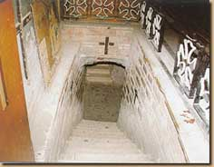
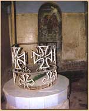
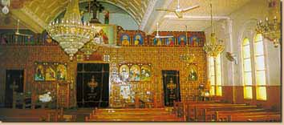
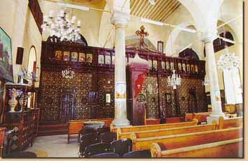

دخلت العائلة المقدس تل بسطا تل بسطا ( بسطة ) بالقرب من مدينة الزقازيق بمحافظة الشرقية ، وتبعد عن مدينة القاهرة بحوالي 100 كم من الشمال الشرقي . وفيها أنبع السيد المسيح عين ماء ، وكانت مدينة مليئة بالأوثان ، وعند دخول العائلة المقدسة المدينة سقطت الأوثان على الأرض ، فأساء أهلها معاملة العائلة المقدسة فتركت المدينة وتوجهت العائلة المقدسة نحو الجنوب .
بقايا أثار فرعونية - تل بسطا - الشرقية
غادرت العائلة المقدسة مدينة تل بسطا ( بسطة ) متجهة نحو الجنوب حتى وصلت بلدة مسطرد (بلدة مسطرد، وتبعد عن مدينة القاهرة بحوالي 10 كم تقريباً وكلمة المحمة معناها مكان الاستحمام وسميت كذلك لأن العذراء مريم أحمت هناك السيد المسيح وغسلت ملابسه ، وفي عودة العائلة المقدسة مرت أيضاً على مسطرد ، وأنبع السيد المسيح له المجد نبع ماء لا يزال موجوداً إلى اليوم .
كنيسة السيدة العذراء بمسطرد - القليوبية
سلم المغارة بكنيسة
بئر بداخل الكنيسة
ومن مسطرد انتقلت العائلة المقدسة شمالاً نحو الشرق إلى مدينة بلبيس التابع لمحافظة الشرقية ، وتبعد عن مدينة القاهرة حوالي 55 كم تقريباً واستظلت العائلة المقدسة عند شجرة ، عرفت باسم "شجرة العذراء مريم" ومرت العائلة المقدسة على بلبيس أيضاً في رجوعها .
أيقونة بكنيسة السيدة العذراء ببلبيس
كنيسة السيدة العذراء من الداخل - بلبيس
حجاب الهيكل بكنيسة السيدة العذراء - بلبيس
ومن بلبيس رحلت العائلة المقدسة شمالاً إلى بلدة منية سمن ود - منية جناح من منية سمنود عبرت العائلة المقدسة نهر النيل إلى مدينة سمنود ( جمنوتي - ذبة نشر ) داخل الدلتا ، واستقبلهم شعبها استقبالاً حسناً فباركهم السيد المسيح له المجد ويوجد بها ماجور كبير من حجر الجرانيت ، يقال أن السيدة العذراء عجنت به أثناء وجودها ، ويوجد أيضاً بئر ماء باركه السيد بنفسه .
كنيسة الشهيد ابانوب بسمنود - الغربية